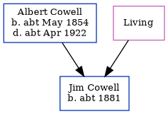

Jim Cowell c1881 -
[ Home ] | [ Calendar ] | [ Surnames Index ] | [ Errors ] | [ Family History ]The child of Albert Cowell (an agricultural labourer) and Ellen Young, Jim Cowell, the second cousin twice-removed on the mother's side of Nigel Horne, was born in Kent, England c. 18811. On 5 Apr 1891, he was living at Clements Row, Wingham, Kent1.
Parents
- Albert was born c. May 1854
- Ellen
Citations
- 1891 England, Wales & Scotland Census - Findmypast (was age 10 and the son of the head of the household)
Media
1891 England, Wales & Scotland Census - GBC/1891/0005927287
Family Tree
Map
Generated by ged2site. Last updated on Jul 3, 2024